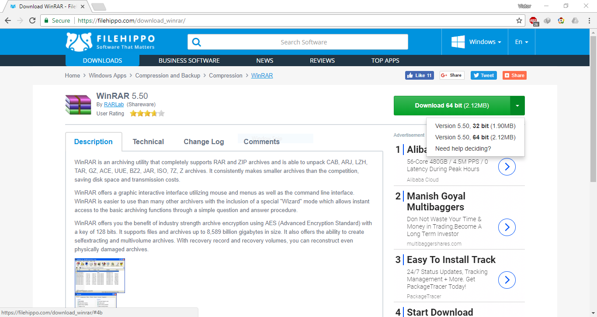
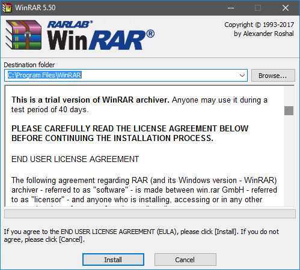
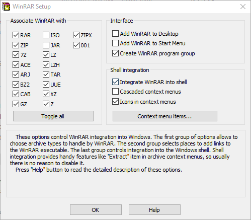
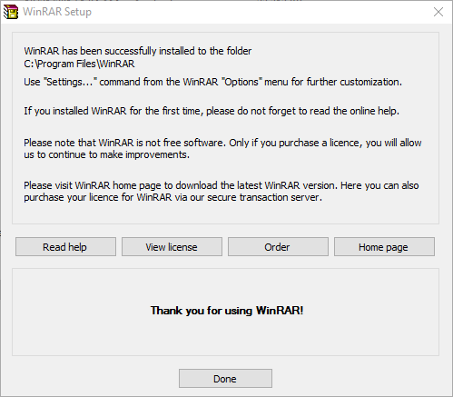

ດາວໂຫລດແລະຕິດຕັ້ງ winRAR ໂປຣແກຣມແຕກໄຟລທີ່ຕ້ອງມີຕິດເຄື່ອງ
WinRAR ແມ່ນໂປຣແກຣມທີ່ໃຊ້ສຳລັບແຕກໄຟລ, ບີບອັດໄຟລ ແລກຍັງສາມາດເຂົ້າເບິງຂໍ້ມູນໃນໄຟລທີ່ຜ່ານການບີບອັດແລ້ວ ບໍ່ວ່າຈະວ່າໃນຮູບແບບ .rar ຫຼື .zip
ຂັ້ນຕອນທີ 1: ເຂົ້າໄປທີ່ winRAR ແລ້ວເລືອກດາວໂຫລດ version 64bit ຫຼື 32bit ຕາມເຄືອງຂອງທ່ານໄດ້ເລີຍ ໂດຍສາມາດກວດສອບໄດ້ດັ່ງນີ້ test  ຂັ້ນຕອນທີ 2: ໄປ Directory ຫຼືທີ່ຢູ່ຂອງໄຟລທີ່ໄດ້ດາວໂຫລດມາແລ້ວຄລິກເປີດ File ຈະພົບໜ້າຕ່າງດັ່ງນີ້ ກົດ Install ເພື່ອເລີມດຳເນີນການຕິດຕັ້ງແລ້ວ ລໍຖ້າ

ຂັ້ນຕອນທີ 3 ຫຼັງຈາກນັ້ນຈະປາກົດໜ້າຕ່າງດັ່ງລຸ່ມນີ້ໃຫ້ກົດ OK

ຂັ້ນຕອນທີ 4 ກົດ Done ເພື່ອສິນສຸດການຕິດຕັ້ງ

ພຽງເທົ່ານີ້ກໍ່ສາມາດແຕກ File .rar .zip ໄດ້ແລ້ວເຊິງມັນຈະມີປະໂຫຍດແນວໃດແມ່ນຕິດຕາມໄດ້ໃນບົດຄວາມຕໍ່ໄປໄດ້ເລີຍ